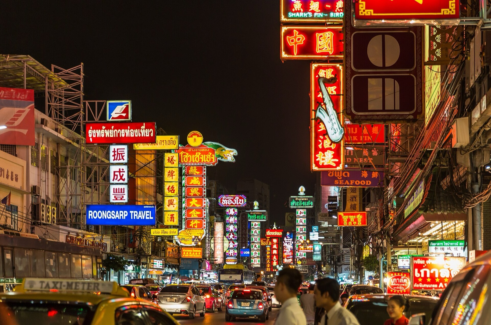

四個晚上
先攻有名號的，再走進酒吧街
每晚一個區，走路互達。Thonglor、Sathorn、中國城 Soi Nana 都是安全的成熟酒吧聚落。

安全Thonglor、Sathorn/Silom、中國城 Soi Nana、Sukhumvit Soi 11 都是成熟的酒吧聚落，走在街上安全。Nana Plaza、Soi Cowboy、Patpong 是紅燈區，性質不同。法定打烊多為 02:00。Rooftop 幾乎都有服裝規定：男生包鞋、有袖上衣。
四個晚上的選項都整理在各天裡了，這頁是總覽：先看每晚的定位，再看有名號的名單。
每晚定位點各天看細節
9/24 四Sukhumvit 線：Nana Plaza（她排）/ APT101 / Soi 11 / Thonglor從朱拉夜市出發
9/25 五Thonglor：Tichuca（她排）/ Octave / Sing Sing / Rabbit Hole從 Safari World 回來
9/26 六老城：Khao San/Rambuttri 按摩 / 中國城 Soi Nana泰拳 22:00 散場
9/27 日河邊或 Sathorn：BKK Social Club / Dry Wave / Bar Us / Vesper / Opium / RCA夜船或 Nobu 之後
有名號的World's 50 Best / 亞洲 50 大 / 電影場景
世界 #49
BKK Social Club Four Seasons / 河邊
World's 50 Best Bars 2025 唯一入榜的泰國酒吧（亞洲 #20）。布宜諾斯艾利斯風格，要訂位。
電影
Sky Bar @ lebua State Tower 63 樓 / Saphan Taksin
《醉後大丈夫 2》的場景，懸空圓形吧台。一杯 600-900 銖，不可短褲拖鞋。純看景點一杯就走。
亞洲 #4
亞洲 #6
亞洲 #7
亞洲 #25
亞洲 #31
紅
街
街
街